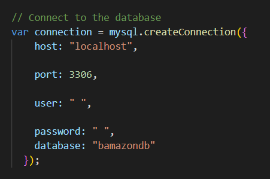
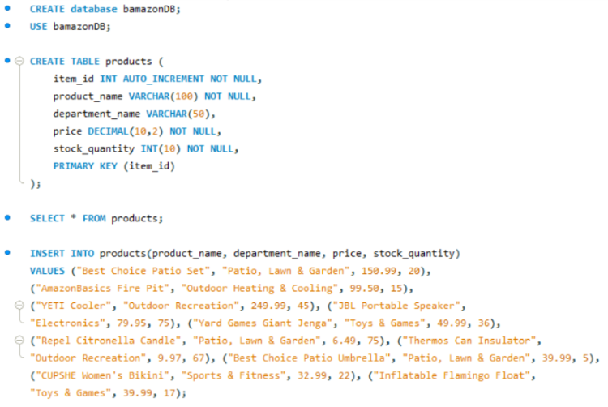
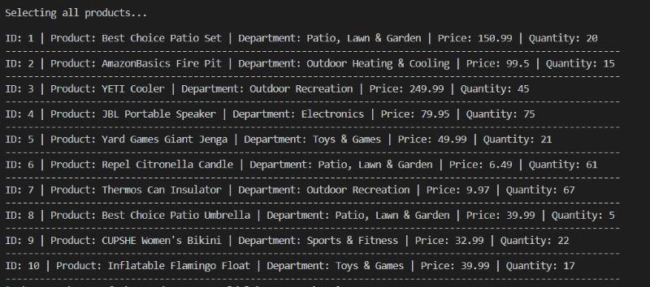
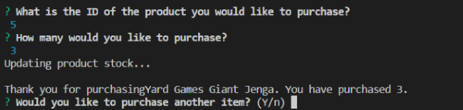
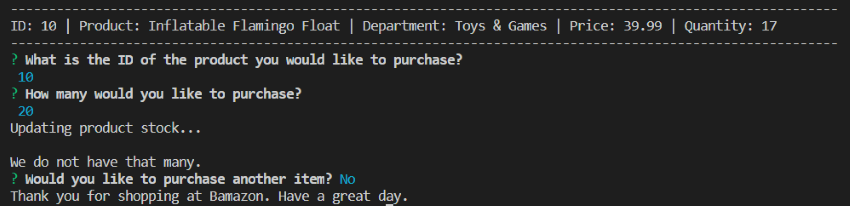

In this project, I creating a storefront through the use of newly-acquired MySQL skills. The app allows the user "customer" to select a product for purchase, and the store updates inventory accordingly. If there is not enough inventory, the store alerts the customer. I chose a backyard pool party theme because it's currently February, and this winter has been awful.
Navigate to the root of your project. Then in the terminal command line run npm init, this will initalize a package.json for your project. Include the following NPM installations:
You must create a connection between MySQL and Node using your MySQL password and database name.
Set up your MySQL Database as a first step.
"Display Products" will show all items available at Bamazon.
The user then selects the product they would like to purchase.
The database is updated based upon the quantity purchased. If there is not enough of the item, the user is notified.
The user has the opportunity to exit the store or shop for additional items after the transaction is completed.
